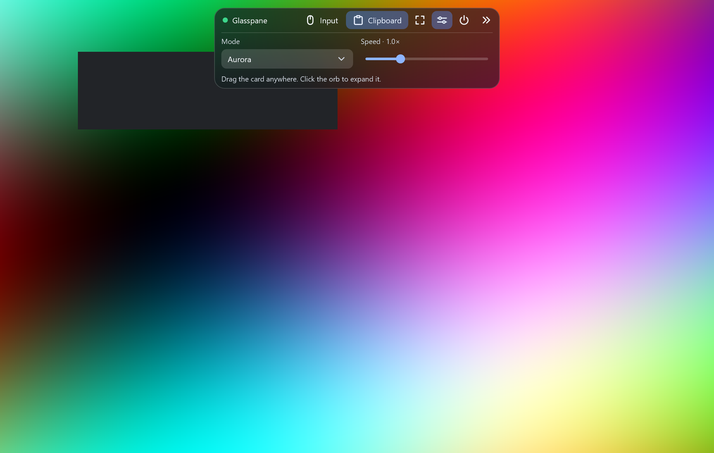

A frosted-glass floating panel, an orb it collapses into, and a handful of controls, drawn over your live video in one Direct2D pass. Native Windows. NativeAOT friendly.
View on GitHub Quick start
Direct2D blurs the frame behind the card and clips it to a rounded shape. Works for any shape and window size, and does not depend on DWM acrylic.
Drag it anywhere. It collapses to an orb or a status pill with an animation, and can fold itself away when idle.
A flip-model swap chain and one device context. Frames are uploaded, drawn letterboxed, overlaid, presented, and each new frame's GPU completion is confirmed.
Buttons (plain, toggle, icon, danger), slider, dropdown, label, tooltips, and a vector icon set you can extend.
No XAML, no reflection. The demo publishes to a single ~3 MB exe that needs no .NET runtime installed.
Crisp on mixed-DPI setups; native move/size, full screen and opt-in exclusion from screen capture.
| A good fit | Not a fit |
|---|---|
| Remote desktop, game streaming, screen sharing, capture tools, camera and monitoring viewers: the picture is the app and the controls float on it. | Forms, grids, rich text, accessibility trees, data binding. There is no layout engine; use WPF or WinUI for those. |
Requires Windows 10 or later and the .NET 10 SDK.
using Glasspane;
UiThread.Initialize();
using var window = new MyWindow(); // derive from UiWindow
return UiThread.Run();sealed class MyWindow : UiWindow
{
readonly object sceneGate = new();
readonly UiVideoView preview;
readonly MyPanel panel; // derive from UiGlassPanel
public MyWindow()
{
CreateNative("My app", WS_OVERLAPPEDWINDOW | WS_CLIPCHILDREN, 0,
unchecked((int)0x80000000), unchecked((int)0x80000000), 1100, 700);
panel = new MyPanel(sceneGate);
panel.Backdrop = (paint, rect, radius, _) => preview.DrawGlass(paint, rect, radius);
preview = new UiVideoView(this) { DrawOverlay = (paint, w, h) => panel.Draw(paint) };
preview.Start();
Show();
}
public void OnFrame(byte[] bgra, int width, int height) =>
preview.Submit(new VideoFrame(bgra, width, height, Pts: 0));
}The complete, runnable version is samples/GlassDemo, with pointer routing, idle auto-collapse and the collapse animation.
dotnet run -c Release --project samples/GlassDemo
dotnet publish samples/GlassDemo -c Release -r win-x64 # NativeAOT single exe| Type | Role |
|---|---|
UiThread | The UI thread: message loop, Post work queue, Error event for exceptions in callbacks. |
UiWindow | A native top-level window with decoded pointer, size and DPI events; full screen, topmost, capture exclusion. |
UiVideoView | Frame upload, letterboxed drawing, overlay callback, DrawGlass, confirmed presentation. |
UiBackdrop | Frosted glass for a window floating over the desktop: grabs what is behind it and blurs it. |
UiGlassPanel | The draggable, collapsible card: geometry, animation, hit testing. You supply content and layout. |
UiButton UiSlider UiChoice UiLabel | The controls. UiTheme holds the colours; UiPaint.RegisterIcon adds icons. |
UiDevices UiSurface UiPaint UiText | The Direct3D/Direct2D/DirectWrite plumbing and drawing helpers, public so you can draw your own things. |